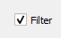
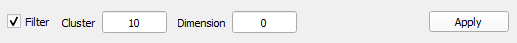

When analyzing a single text, filter results by either Cluster or
Dimension
You must first load a text into DocuScope. Only one text can be
displayed in the Text Visualizer. See how to Load a Single Text
Categories are listed by Count, or the number of instances a
rhetorical feature appears. You can set a minimum number of occurrences of a rhetorical
feature to exclude categories with few results.
-
Below the category list, enable filtering by clicking the Filter
Box

-
Enter a number into the Cluster Text Field and hit
Apply

Clusters with instances less than this number will not be
displayed.
-
Optional: Enter a number into the Dimension Text
Field and hit Apply to filter the number
of instances of each dimension
After filtering for the desired results, explore the
different categories and where they appear in the text.